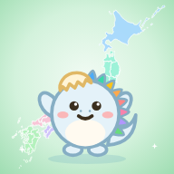

プライバシーポリシー
にっぽん ちず たんけん（小学生向けの日本の地理アプリ）
はじめに（かんたんなまとめ）
- お子さまの情報を集めません。
- 記録や名前は、お使いの端末の中だけに保存し、外部に送りません。
- 広告・アクセス解析・トラッキングは使っていません。
- お子さまが使う画面には、外部サイトへのリンクや、お買い物の画面はありません。
- 購入（30日間の無料お試し・月額の登録）は、保護者向けの画面だけにあります。お支払いは Apple が扱い、開発者はお支払いの情報を受け取りません。
1. このポリシーについて
このページは、「にっぽん ちず たんけん」（App Store のアプリ）で、お子さまと保護者の方の情報をどのように扱うかを説明するものです。
このアプリは、小学生のお子さまが使うことを前提に作っています。お子さまが安心して使えるよう、保護者の方に読んでいただけるとうれしいです。
2. 集める情報
開発者は、お子さまや保護者の方の情報を一切集めていません。
アプリには、開発者のサーバーや、ほかの会社（第三者）に情報を送る仕組みがありません。会員登録やログインもありません。インターネットにつながっていなくても使えます。
3. 端末の中に保存する情報
アプリを使うために、次の情報をお使いの端末の中だけに保存します。これらは端末の外に送られず、開発者が見ることもできません。
- お子さまの名前とよびかた（入力したときだけ。入力しなくても使えます）と、キャラクター（恐竜）の名前
- 解いた問題の記録（正解・不正解、選んだ答え、かかった時間、日付など）、おぼえた都道府県、地方スタンプ、キャラクターの成長、バッジ、カレンダー
- 設定（効果音、文字の大きさ、前に選んだジャンル・地方・むずかしさなど）
- 保護者用の暗証番号（番号そのものではなく、元に戻せない形に変えて保存します）
- Face ID・Touch ID で開くかどうかの設定
- お試し・登録の状態（お試しを始めた日、登録中かどうか）と、月額の値段・App Store の国（App Store から受け取ったもの。プランと値段の表示に使います）、お試しの前の1回の体験を使ったかどうか
4. 広告・解析ツール・トラッキング
広告は表示しません。アクセス解析ツールや、利用状況を調べる仕組み、トラッキング（ほかのアプリやサイトをまたいだ追跡）も使っていません。外部の文字（フォント）や部品も読みこみません。
5. Face ID・Touch ID
Face ID・Touch ID は最初はオフです。保護者の方がオンにしたときだけ、保護者向けの画面を開く確認に使います。顔や指紋のデータは端末（iOS）が管理しており、アプリが受け取ったり保存したりすることはありません。
6. 購入（App 内課金）
- 0円の「30日間 無料お試し」と、月額の自動更新サブスクリプションがあります。どちらも保護者向けの画面（保護者用の暗証番号の先）からだけ申しこめます。
- 購入・お支払い・解約は、Apple の App Store の仕組み（Apple ID）で行われます。お名前・Apple ID・クレジットカードなどのお支払いの情報は Apple が扱い、開発者には届きません。開発者が独自のサーバーや外部の課金サービスを使うこともありません。
- アプリは、使える期間かどうかを決めるために、端末の中で App Store から「お試しを始めた日」と「登録中かどうか」だけを受け取り、端末の中に保存します。この情報を開発者に送ることはありません。
- アプリの利用規約は、Apple の標準の使用許諾契約（EULA）です。保護者向けの画面の「利用規約」から開けます（開く前に、ブラウザで Apple のページを開くことを確かめる画面が出ます）。
7. 記録のバックアップ
保護者向けの画面で「きろくを ほぞん」を押したときだけ、記録をまとめたファイルを作ります。保存先（「ファイル」アプリや iCloud Drive など）は、保護者の方がご自分で選びます。アプリが自動でファイルを外部に送ることはありません。
8. 記録を消すには
アプリを端末から削除すると、端末の中に保存した記録・名前・設定はすべて消えます。保護者の方がバックアップのファイルを作っていた場合は、そのファイルも保存先から削除してください。
お試し・登録の状態は Apple ID に記録されているので、アプリを削除しても消えません（入れ直したときも、同じ Apple ID なら引き継がれます）。サブスクリプションは、アプリを削除しても自動では解約されません。解約は iPhone・iPad の「設定」→ 自分の名前 →「サブスクリプション」から行ってください。
9. お子さまのプライバシーへの配慮
このアプリは、お子さまから個人情報を集めない作りにしています。日本の個人情報保護法や、アメリカの児童オンラインプライバシー保護法（COPPA）などの考え方をふまえ、次のようにしています。
- 名前の入力は任意で、入力した名前も端末の外には出ません。
- 名前の変更、学習レポート、バックアップ、購入・登録の確認・解約、利用規約を開くボタンなど保護者向けの機能は、保護者用の暗証番号（または保護者がオンにした Face ID・Touch ID）の先に置いています。
- お子さまが使う画面には、外部へのリンクや、お子さまが自分でお買い物できる画面はありません。練習ができない期間も、お子さまの画面では「おうちのかたに きいてね」とだけ表示し、購入をすすめる表示はしません。
10. 地図のデータ
地図は、「国土数値情報（行政区域データ）」（国土交通省）（https://nlftp.mlit.go.jp/ksj/gml/datalist/KsjTmplt-N03-2026.html）をもとに katsu-ya が作成し、アプリの中に入れています。地図を表示するために、外部と通信することはありません。
11. このポリシーの変更
内容を変えるときは、このページを更新し、下の日付を新しくします。情報の扱いを大きく変えるときは、アプリの説明やこのページで分かりやすくお知らせします。
12. お問い合わせ
運営者：katsu-ya（個人で開発しています）
メールアドレス：katsu.rx.101@gmail.com
よくある質問は サポートページ をご覧ください。